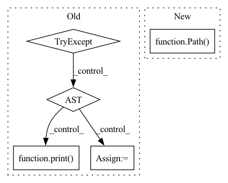

Pattern ID :36381

Before Change
if name in assets:
msg = f"{file} missing, try downloading from https://github.com/{repo}/releases/"
redundant = False // second download option
try: // GitHub
url = f"https://github.com/{repo}/releases/download/{tag}/{name}"
print(f"Downloading {url} to {file}...")
torch.hub.download_url_to_file(url, file)
assert file.exists() and file.stat().st_size > 1E6 // check
except Exception as e: // GCP
print(f"Download error: {e}")
assert redundant, "No secondary mirror"
url = f"https://storage.googleapis.com/{repo}/ckpt/{name}"
print(f"Downloading {url} to {file}...")
os.system(f"curl -L "{url}" -o "{file}" --retry 3 -C -") // curl download, retry and resume on fail
finally:
if not file.exists() or file.stat().st_size < 1E6: // check
file.unlink(missing_ok=True) // remove partial downloads
After Change
if not file.exists():
// URL specified
name = Path(urllib.parse.unquote(str(file))).name // decode "%2F" to "/" etc.
if str(file).startswith(("http:/", "https:/")): // download
url = str(file).replace(":/", "://") // Pathlib turns :// -> :/
name = name.split("?")[0] // parse authentication https://url.com/file.txt?auth...
In pattern: SUPERPATTERN
Frequency: 4
Non-data size: 5
Instances
Fragment ID: 102970691
Project Name: fcakyon/yolov5-pip
Commit Name: 5afe85ae36145f9f3b511b2918b51566b7296f5d
Time: 2021-06-22
Author: 34196005+fcakyon@users.noreply.github.com
File Name: yolov5/utils/google_utils.py
M Class Name: AnonimousClass
N Class Name: AnonimousClass
M Method Name: attempt_download(2)
N Method Name: attempt_download(2)
M Parent Class:
N Parent Class:
M File Name: yolov5/utils/google_utils.py
N File Name: yolov5/utils/google_utils.py
M Start Line: 21
M End Line: 59
N Start Line: 41
N End Line: 73
'>
Before Change
filename = output_path
exit_code = 0
try:
for handler in format_handlers:
try:
handler(filename)
break
except UnrecognizedFile:
pass
else:
raise IOError("Unrecognized file type")
except Exception as e:
if DEBUG:
raise
print(sys.stderr, "%s: %s" % (filename, str(e)))
exit_code = 1
sys.exit(exit_code)
After Change
input_path = os.path.abspath(input_path)
output_path = os.path.abspath(output_path)
if os.path.isdir(input_path):
Path(output_path).mkdir(parents=True, exist_ok=True)
copy_tree(input_path, output_path)
all_files = os.listdir(output_path)
'>
Fragment ID: 102970694
Project Name: cbica/gandlf
Commit Name: 84efc04600487d99995e27a6d8bf7c21e77881b3
Time: 2022-02-10
Author: sarthak.pati@hotmail.com
File Name: GANDLF/anonymize/slide_anonymizer.py
M Class Name: AnonimousClass
N Class Name: AnonimousClass
M Method Name: anonymize_slide(2)
N Method Name: anonymize_slide(2)
M Parent Class:
N Parent Class:
M File Name: GANDLF/anonymize/slide_anonymizer.py
N File Name: GANDLF/anonymize/slide_anonymizer.py
M Start Line: 873
M End Line: 892
N Start Line: 890
N End Line: 903
'>
Before Change
if name in assets:
msg = f"{file} missing, try downloading from https://github.com/{repo}/releases/"
redundant = False // second download option
try: // GitHub
url = f"https://github.com/{repo}/releases/download/{tag}/{name}"
print(f"Downloading {url} to {file}...")
torch.hub.download_url_to_file(url, file)
assert file.exists() and file.stat().st_size > 1E6 // check
except Exception as e: // GCP
print(f"Download error: {e}")
assert redundant, "No secondary mirror"
url = f"https://storage.googleapis.com/{repo}/ckpt/{name}"
print(f"Downloading {url} to {file}...")
os.system(f"curl -L "{url}" -o "{file}" --retry 3 -C -") // curl download, retry and resume on fail
finally:
After Change
if not file.exists():
// URL specified
name = Path(urllib.parse.unquote(str(file))).name // decode "%2F" to "/" etc.
if str(file).startswith(("http:/", "https:/")): // download
url = str(file).replace(":/", "://") // Pathlib turns :// -> :/
name = name.split("?")[0] // parse authentication https://url.com/file.txt?auth...
'>
Fragment ID: 102970697
Project Name: ultralytics/yolov5
Commit Name: f3c3d2ce5d85ba77336a9d0a87c6a446732cdda6
Time: 2021-06-08
Author: glenn.jocher@ultralytics.com
File Name: utils/google_utils.py
M Class Name: AnonimousClass
N Class Name: AnonimousClass
M Method Name: attempt_download(2)
N Method Name: attempt_download(2)
M Parent Class:
N Parent Class:
M File Name: utils/google_utils.py
N File Name: utils/google_utils.py
M Start Line: 21
M End Line: 59
N Start Line: 41
N End Line: 73